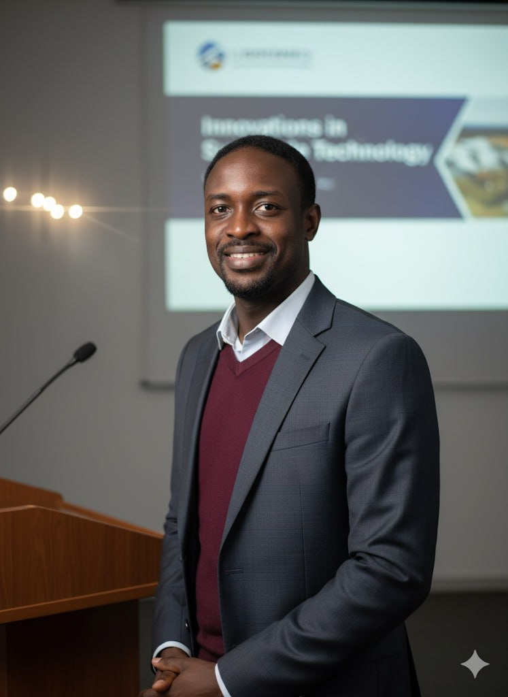

About Me
I am a geospatial scientist with a passion for untangling complex environmental challenges. My journey has taken me from the coastal waters of Ghana to the river basins of Japan, driven by a single goal: to use data to protect our planet's most vital resources. I specialise in applying GIS, remote sensing, and simulation modeling to understand the impacts of human activity on water systems, and ultimately environmental sustainability.
I believe that the most powerful solutions emerge from the intersection of rigorous science, innovative technology, and a deep understanding of societal needs. Whether I'm developing a model to track pesticide runoff or analyzing three decades of satellite imagery to quantify urban sprawl, my work is focused on turning raw data into actionable insights for a sustainable future.